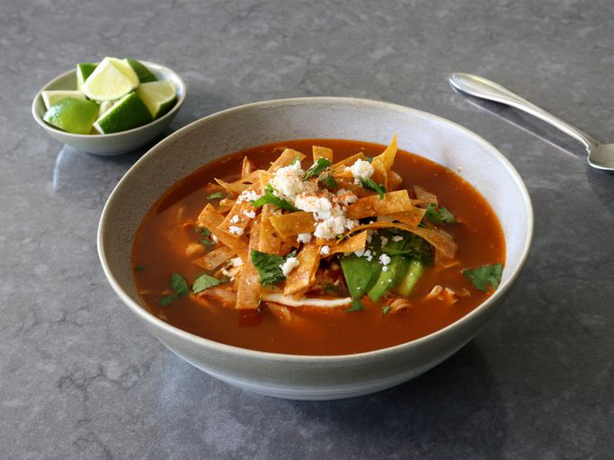
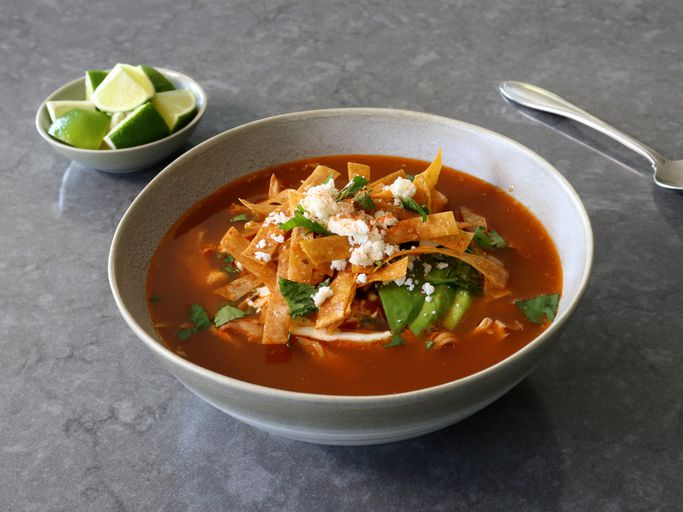

Chicken Tortilla Soup
 

Description
This is a quick and easy recipe that tastes delicious. Carrots and potatoes, with salsa and meatballs, makes for a hearty, delicious soup that can be prepared in no time at all.
Ingredients
- 1 tablespoon olive oil
- 1 onion, diced
- 2 carrots, peeled and diced
- 2 stalks celery, diced
- 2 cloves garlic, minced
- 1/2 teaspoon dried oregano
- 1/2 teaspoon dried basil
- 1/4 teaspoon crushed red pepper flakes, optional
- 2 tablespoons tomato paste
- 1 (14.5-ounce) can diced tomatoes
- 4 cups chicken broth
- 4 cups chopped cabbage
- 1 bay leaf
- Kosher salt and freshly ground black pepper, to taste
- 1/4 cup chopped fresh parsley leaves
Steps
- Heat olive oil in a large stockpot or Dutch oven over medium heat.
- Add ground beef, onion, carrots and celery. Cook until beef has browned, about 3-5 minutes, making sure to crumble the beef as it cooks; stir in garlic, oregano, basil and red pepper flakes.
- Stir in tomato paste until well combined, about 2 minutes.
- Stir in diced tomatoes, chicken broth, cabbage and bay leaf; season with salt and pepper, to taste.
- Bring to a boil; reduce heat and simmer until flavors blend, about 15 minutes.
- Stir in parsley.
- Serve immediately.